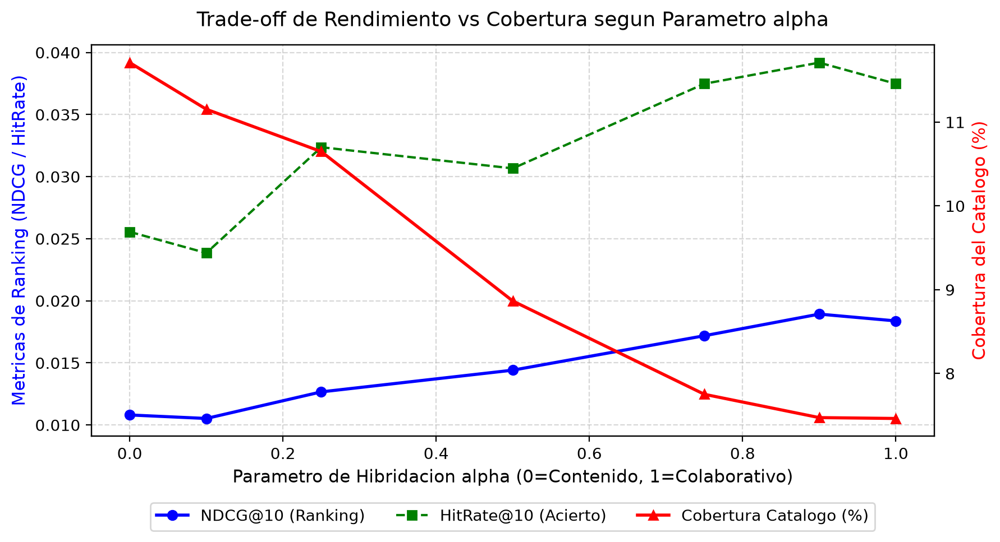
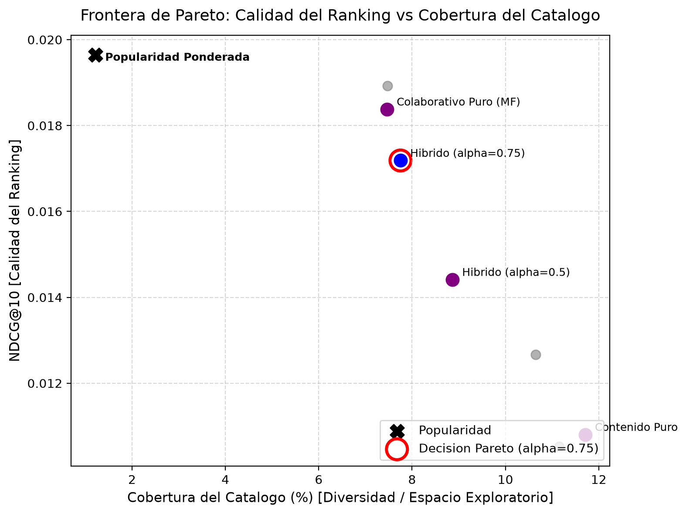

Evaluación fuera de línea realizada mediante el protocolo causal temporal_leave_one_out sobre los 587 usuarios evaluables de MovieLens (ml-latest-small):
| Modelo / Enfoque | Parámetro α | NDCG@10 | HitRate@10 | Precision@10 | Recall@10 | Cobertura Catálogo | RMSE (Rating) |
|---|---|---|---|---|---|---|---|
| Popularidad Ponderada (Baseline Bayesiano) | - | 0.0197 | 0.0426 | 0.0043 | 0.0426 | 1.22% | - |
| Contenido Puro (TF-IDF de Géneros) | 0.00 | 0.0108 | 0.0256 | 0.0026 | 0.0256 | 11.71% | - |
| Híbrido (α = 0.10) | 0.10 | 0.0105 | 0.0239 | 0.0024 | 0.0239 | 11.15% | 1.0264 |
| Híbrido (α = 0.25) | 0.25 | 0.0127 | 0.0324 | 0.0032 | 0.0324 | 10.65% | 1.0264 |
| Híbrido (α = 0.50) | 0.50 | 0.0144 | 0.0307 | 0.0031 | 0.0307 | 8.87% | 1.0264 |
| Híbrido (α = 0.75) Decisión Pareto | 0.75 | 0.0172 | 0.0375 | 0.0037 | 0.0375 | 7.75% | 1.0264 |
| Híbrido (α = 0.90) | 0.90 | 0.0189 | 0.0392 | 0.0039 | 0.0392 | 7.47% | 1.0264 |
| Colaborativo Puro (Matrix Factorization SVD) | 1.00 | 0.0184 | 0.0375 | 0.0037 | 0.0375 | 7.46% | 1.0264 |
ml-latest-small (GroupLens Research / Universidad de Minnesota). SHA-256 verificado: 696d65a3dfceac7c45750ad32df2c259311949efec81f0f144fdfb91ebc9e436. Cumpliendo los términos de uso ético, los datos crudos no se redistribuyen en Git (ignorados en .gitignore).temporal_leave_one_out): Se reservó para cada usuario el último evento cronológico en el conjunto de prueba (test), entrenando con las interacciones previas (train: 100,226 filas). Esto previene estrictamente el data leakage temporal.

reports/cold_start_fallback.csv), asegurando calidad percibida sin riesgo de recomendaciones vacías.pytest), formulación vectorizada de Precision@K, Recall@K y NDCG@K, y visualización de la frontera de Pareto.uv y la exclusión de datos protegidos en Git. Suite de pruebas: 9 pruebas aprobadas al 100%.